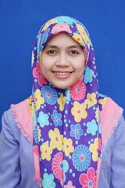

| No. |
Nama |
Jabatan |
Foto |
| 1. |
Drs. Nawar |
Kepala Sekolah |
|
| 2. |
Ibnu Rusdi, S.Pd. M.Si |
Wakil Kepala Sekolah 1 |
|
| 3. |
Ahmad Mardhani Chan, ST |
Wakil Kepala Sekolah 2 |
|
| 4. |
Suwito, SS |
Wakil Kepala Sekolah 3 |
|
| 5. |
Sri Asriani, S.Psi |
Guru BP/BK |
|
| 6. |
Dhiauddin, S.Pd |
Guru BP/BK |
|
| 7. |
Supriyadi, S.Ag |
Guru Agama Islam |
|
| 8. |
Dra. Hj. Laila Mahyuni Daulay |
Guru Agama Islam |
|
| 9. |
H. M. Fauzi Lubis, MA |
Guru Agama Islam |
|
| 10. |
Agus Supriyadi, SH |
Guru PPKN |
|
| 11. |
Nazamudin Andreas, S.Pd |
Guru PPKN |
|
| 12. |
Ahmad Riadi, S.Pd |
Guru Bahasa Indonesia |
|
| 13. |
Dra. F. Adla Hasibuan |
Guru Bahasa Indonesia |
|
| 14. |
Wahyu Rizky Indira, S.Pd |
Guru Bahasa Indonesia |
|
| 15. |
Irmansyah, MS |
Guru Bahasa Inggris |
|
| 16. |
Susanty Ningsih, S.Pd |
Guru Bahasa Inggris |
|
| 17. |
Surya Ningsih S.Pd, M.Si |
Guru Matematika |
|
| 18. |
Indra Maryanti, S.Pd, M.Si |
Guru Matematika |
|
| 19. |
Dian Pramana Putra, S.Pd |
Guru Matematika |
 |
| 20. |
Beni Ardi, S.Pd |
Guru Matematika |
|
| 21. |
Juprijal.S.Pd |
Guru Matematika |
|
| 22. |
Masri Habra, S.Pd.FIS |
Guru Fisika |
|
| 23. |
Drs. M. Adlin |
Guru Fisika |
|
| 24. |
Drs. Samijo, M.Si |
Guru Fisika |
|
| 25. |
Dra. Adawiyah, M.Si |
Guru Biologi |
|
| 26. |
Parlagutan Lubis, S.Pd |
Guru Biologi |
|
| 27. |
Mosh Riza Pahlevi, S.Km, M.S |
Guru Kimia |
|
| 28. |
Devi Ratna Sari. S.Pd |
Guru Kimia |
|
| 29. |
Hamidatun Nisa. S.Pd |
Guru Kimia |
|
| 30. |
Junaidi, SS |
Guru Sejarah |
|
| 31. |
Retno Sundari, SE |
Guru Ekonomi |
|
| 32. |
Putri Sari Rahmadiyah P, S.Pd |
Guru Ekonomi |
 |
| 33. |
Dra. Hj. Emmy Way |
Guru Sosiologi |
|
| 34. |
Dewi Rachmayani Nst, S.Pd |
Guru Sosiologi |
|
| 35. |
Susilo Prayetno, S.Sn |
Guru Pendidikan Seni |
|
| 36. |
Dra. Mariko Jaya |
Guru Pendidikan Seni |
|
| 37. |
Eflin Nuriadin, S.Pd |
Guru Penjasorkes |
|
| 38. |
Nurwahyuni, S.Pd |
Guru Penjasorkes |
|
| 39. |
ASwardi Hutagalung, S.Pd |
Guru Penjasorkes |
|
| 40. |
Dwi Setia Wanty, S.Pd |
Guru Penjasorkes |
|
| 41. |
Mhd. Taufik Batubara, ST, M.Kom |
Guru TIK/Prakarya |
|
| 42. |
Chairil Anhar, SS |
Guru Bahasa Arab |
|
| 43. |
Milda Sujannah Hrp, SS |
Guru Bahasa Jepang |
|
| 44. |
Irfan Sanjaya, S.Pd |
Guru Geografi |
|
| 45. |
M.Maudin Nst, S.Ag |
Guru Etika |
|